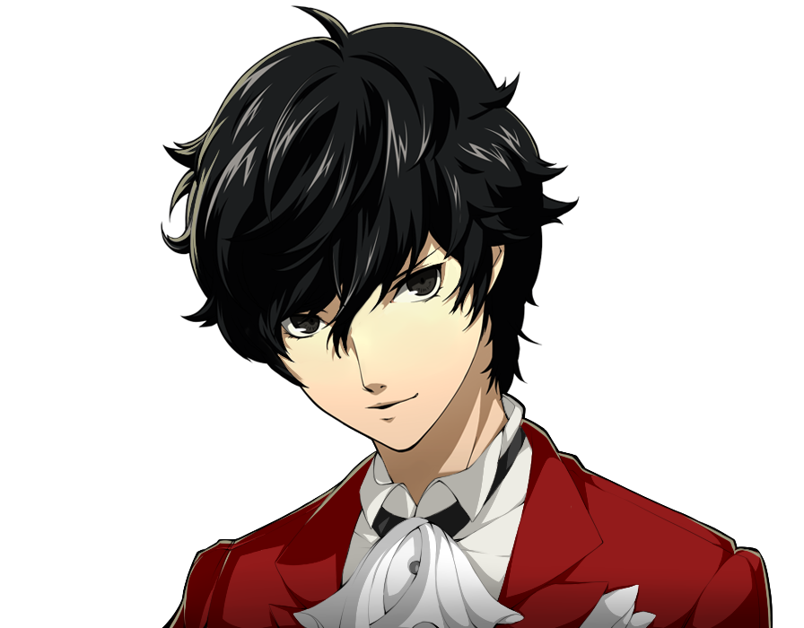
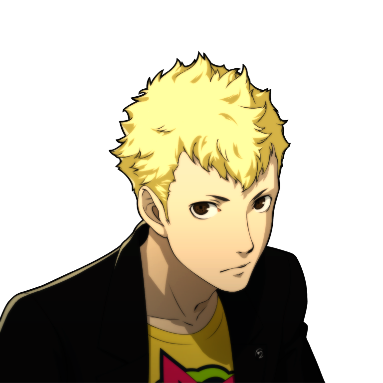
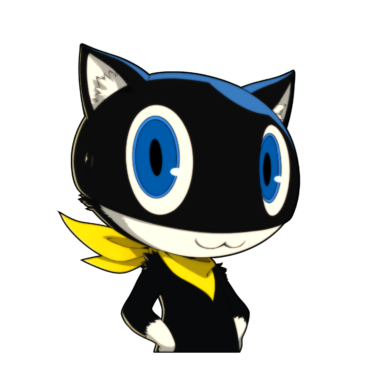
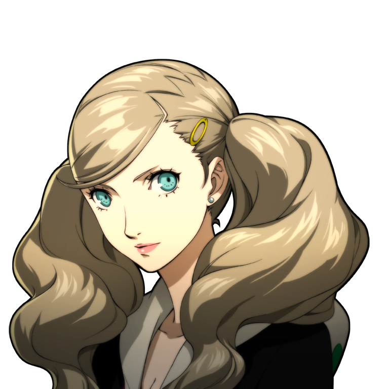
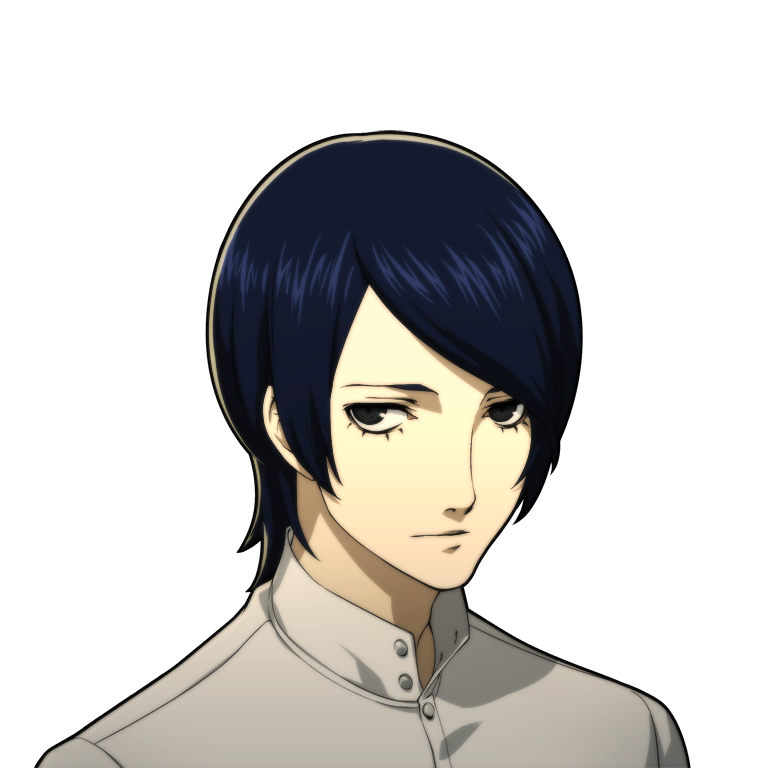
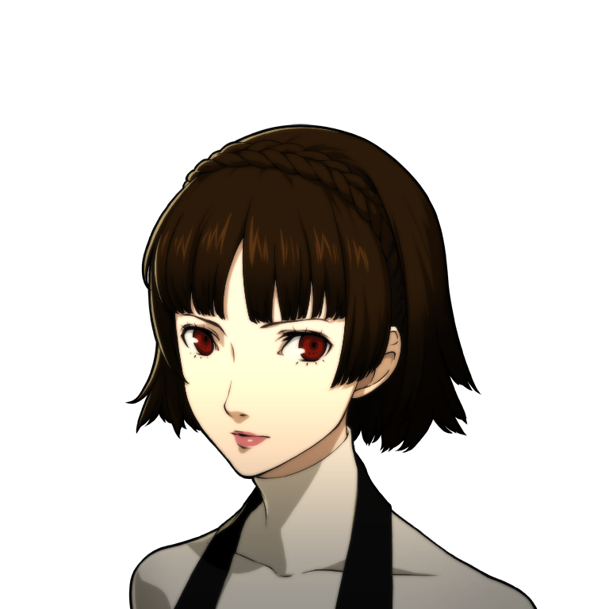
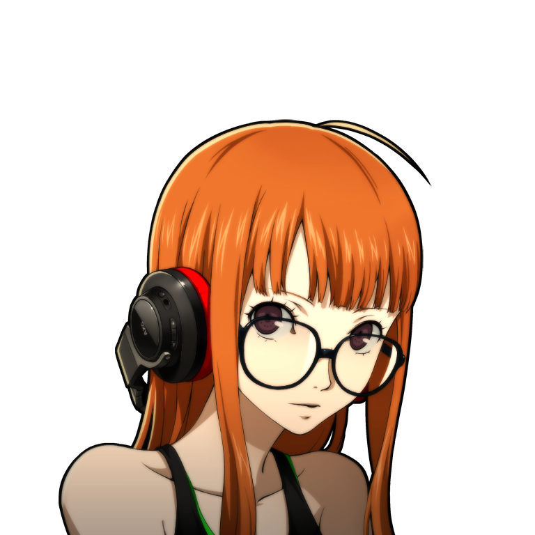
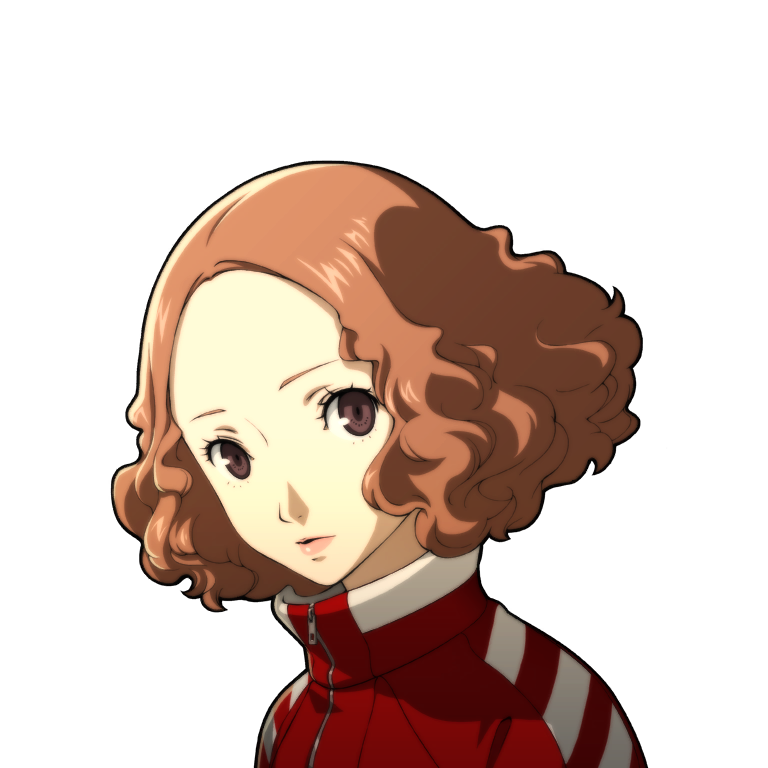
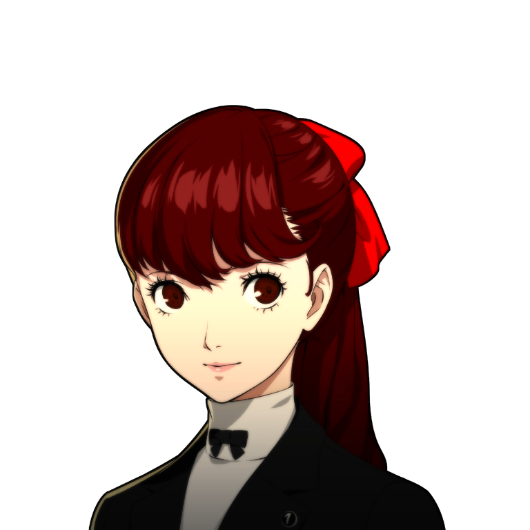

PERSONA 5
Ladrones Fantasmas del Corazón
Los Ladrones Fantasma de Corazones (心の怪盗団, Kokoro no kaitō-dan), también conocido simplemente como Ladrones Fantasma, es un grupo de Usuario de Personas en Persona 5. Hartados de los engaños, la hipocresía y la corrupción que los rodea, los ladrones fantasma se dedican a"robar" los corazones corruptos de los adultos "malvados" para cambiar y reformar la sociedad para mejor, aunque también han atacado a adolescentes como Kazuya Makigami y Futaba Sakura. En un momento dado, el jugador puede nombrar el grupo que se mostrará en las tarjetas de llamada y las funciones en línea con el nombre predeterminado de "The Phantoms" ("Los Fantasmas")(ザ・ファントム?).
Actores

Ren Amamiya (Joker)
Lider de Los Ladrones Fantasmas, el protagonista del juego y líder de los ladrones fantasmas. Utiliza el nombre en clave "Joker". Su Persona es Arsène, un ladrón ficticio francés.

Ryuji (Skull)
Ryuji es un estudiante problemático y el primer miembro en unirse al grupo. Usa el nombre en clave "Skull". Su Persona es Captain Kidd, un pirata legendario.

Morgana (Joker)
Morgana es un gato parlante con la habilidad de convertirse en un vehículo para los ladrones fantasmas. es un miembro vital del grupo.

Ann Takamaki (Panther)
Ann es una estudiante de origen extranjero y una modelo. Usa el nombre en clave "Panther". Su Persona es Carmen, una figura inspirada en la ópera Carmen.

Yusuke Kitagawa (Fox)
Yusuke es un talentoso artista y es el siguiente en unirse a los ladrones fantasmas. Usa el nombre en clave "Fox". Su Persona es Goemon, un legendario ladrón samurái.

Makoto Nijimura (Queen)
Makoto es una estudiante muy inteligente y seria que se convierte en una destacada miembro del grupo. Usa el nombre en clave "Queen". Su Persona es Johanna, inspirada en Juana de Arco.

Futaba Sakura (Oracle)
Futaba es una genio de la informática y se une al grupo como su estratega y apoyo técnico. Usa el nombre en clave "Oracle". Su Persona es Necronomicon, inspirada en la obra de H.P. Lovecraft.

Haru Okumura (Noir)
Haru es una heredera de una poderosa corporación y se une más tarde al grupo. Usa el nombre en clave "Noir". Su Persona es Milady, inspirada en Los tres mosqueteros.

Kazumi Yoshizawa
Ella es una estudiante nueva en la escuela Shujin Academy y es una gimnasta extremadamente talentosa.
Goro Akechi (Crow)
Goro Akechi es un personaje clave en la historia de "Persona 5". Es un joven detective extremadamente talentoso y carismático que inicialmente se cruza con los ladrones fantasmas mientras investiga una serie de casos de palacios y crímenes.